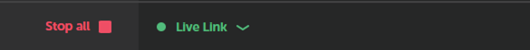
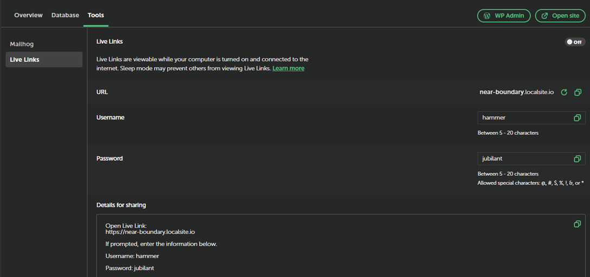

Pré-requis
- Connaissance de base du langage HTML & CSS
- Vérification que vous avez bien créé votre dossier de travail (sur le bureau, le drive, support externe)
- Votre maquette et votre charte graphique
- Que votre serveur local est bien installer
Maintenant vous êtes paré pour commencer à installer votre premier projet WordPress avec Local-wp
Attention l’installation en utilisant le drive est un peu plus longue, mais le gros avantage c’est que vous pourrez retrouver votre projet sur tous vos environnements de travail, il vous suffira de vous connecter à votre adresse Gmail avant de lancer Local Wp
Sur la page principale
Sous l ’onglet Overview => Aller sur One-click admin et activer sur On (par défaut il vous sélectionne votre identifiant de de connexion de votre WordPress, vous serez connecté automatiquement.
Pour utiliser Live Links, vous devez avoir créer un compte sur le site et simplement vous y connecter depuis Local en cliquant sur l'icône d'avatar dans le coin supérieur gauche.
Une fois connecté, vous créez un lien en direct pour un site en cliquant sur le lien "Activer" dans l'onglet de présentation du site.
 Sur la page principale

Puis sur l’onglet Tools puis choisir Live Links, vous découvrirez votre lien
et vos identifiants pour permettre de le faire visualiser en ligne
Régi par la licence Creative Commons: Licence d'attribution non commercial 4.0